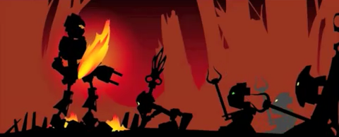
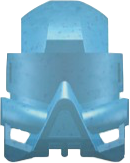
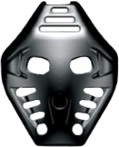

Protectors of the Matoran
Toa are a race of heroes whose task is to protect and defend the primary residents of the Matoran Universe: the Matoran. Similar to the Matoran, each Toa belongs to a specific element, to most common of which are fire, water, air, ice, stone and earth.
Traditionally the Toa work in teams of six where each member is of a different element, although a Toa working alone is not unheard of and even larger groups are not an impossibility.

In addition to various tools and weapons each Toa wields a Mask of Power; a Great Kanohi, which are the most powerful of the common masks. On their power level they are stronger than the Noble Kanohi commonly worn by the Turaga, but weaker than Legendary Kanohi.

